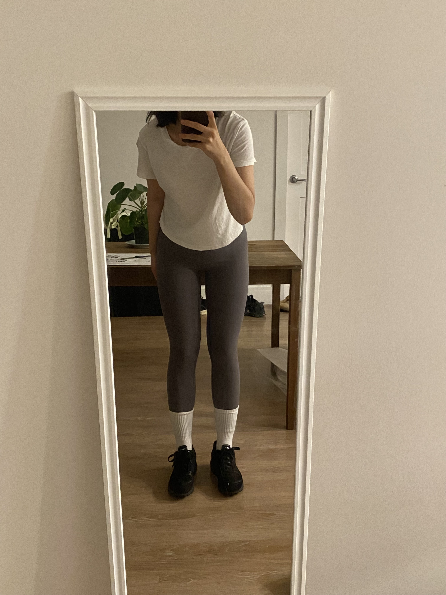
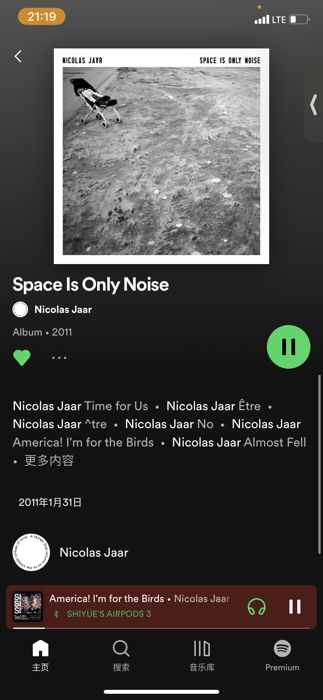
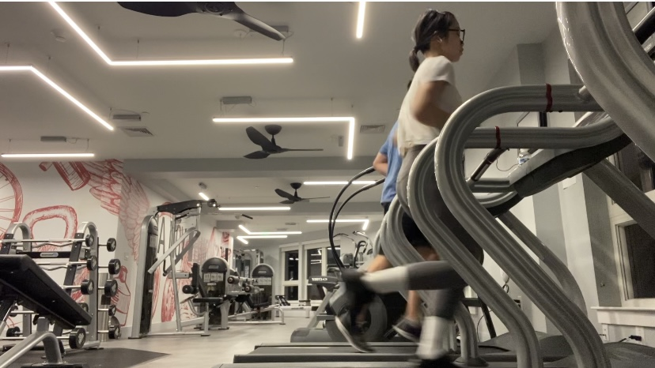
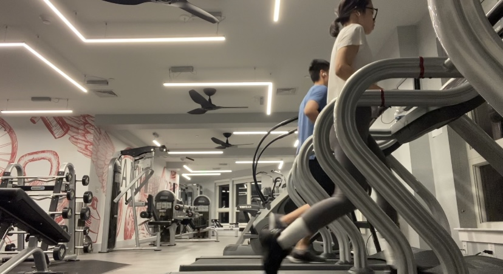

Workout
text on the bottom & horizontal scrolling/speed(with image margins/padding)(gaberiel) / audio element (image 6) playing in the
- Get changed into the most comfortable clothes

- Pack a water bottle, keys, and earphones

- Head out to the nearest gym

- Find a space at the gym where you can stretch, then follow a 5 minute stretching video on YouTube

- After stretching, sanitize and wipe a treadmill

- Use your earphones to listen to a podcast or songs, or watch youtube videos for distraction as needed

- Start to walk on the treadmill slowly for up to 5 minutes

- Start to walk faster for 10 minutes, faster than 4.0 speed

- Drink some water

- Run/jog for a minute approximately at 7.0 speed

- Walk again for 10 minutes, faster than 4.0 speed

- Drink some water

- Run/jog again for a minute approximately at 7.0 speed

- Walk slowly again for up to 5 minutes

- Drink some water

- Stop the treadmill

- Sanitize the treadmill
- Head back home